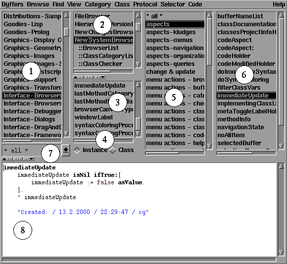
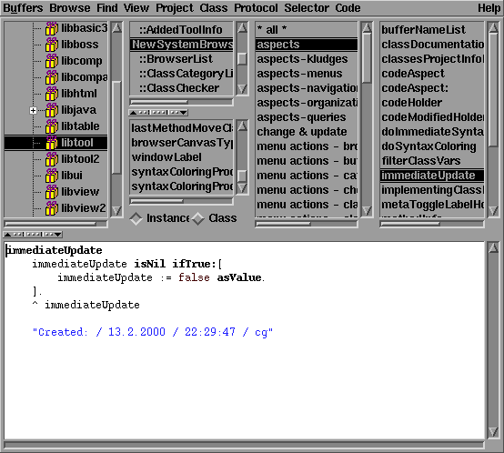
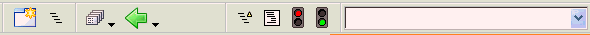
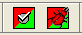

![[up]](../../../icons/DocsUpArrow.gif)
![[next]](../../../icons/DocsRightArrow.gif) The New SystemBrowser provides all functionality of the previous (and still available)
SystemBrowser but offers a much improved user experience.
If you are new to the ST/X tools,
you may want to read the
old SystemBrowser's documentation for additional information
on the meaning of some operations.
The New SystemBrowser provides all functionality of the previous (and still available)
SystemBrowser but offers a much improved user experience.
If you are new to the ST/X tools,
you may want to read the
old SystemBrowser's documentation for additional information
on the meaning of some operations.
Additional functionality provided by the new SystemBrowser includes:
- Multiple buffers, change and visited history
these avoid the "many open views" confusion, and help to keep track of browsed code
- Undo support
both the editor and the browser itself support very sophisticated multi-level undo and redo.
- Multi-select in all lists
to apply menu functions on a set of items.
- View classes by category (as done in the old browser), by namespace, by project or by inheritance.
- More powerful search functions ("senders of any", "search for variables", "code search" etc.)
in addition, all searches can be limited in scope to the current project, namespace, category, hierarchy etc.
- Integrated functionality from the Refactoring Browser and SmallLint tools.
(code search, rewriting, checking and undo history)
- Additional convenient code generation functionality.
(accessors, change & update, visitor pattern)
- Drag & Drop for category, class and package change
also to copy code to other classes (press CTRL)
- Improved dialogs with entry completion
most dialogs provide very reasonable defaults,
for DWIM ("do what I mean") behavior.
Try changing a method's category and look at the dialog's default ;-)
- Lots of informative feedback
this includes immediate highlight of variable-accessing methods,
instant syntax coloring, quick information about the selected class/method
in an info area, additional icons in the lists etc.
Select a variable in the inst-var list and see immediately where it is read or written.
Also, modified classes & methods are highlighted with a different colour in the browser lists.
- Code completion on Tab-key, or "as you type"
- Completely re-writtten, using the GUI painter.
this allows for easier extension (for example to add additional menu items)
- Pseudo class categories (such as "changed") and pseudo method categories
(such as "redefined").
- Embedded Menu, Canvas and Image editors for resource methods.
- The new code view shows line numbers, highlights variables
and provides the CTRL-click menus for implementors and senders.
It also supports statement level break- and trace points
and lint checks.
- Coverage analysis display. Classes or individual methods can be recompiled with instrumentation
and code is shown in different colors in the browser depending on whether it has been executed or not.
- Embedded sunit test runner and indicator of the last result in the method list.
With the new SystemBrowser, we have concentrated on making the tool as useful as
possible; a lot of work has been put in offering intelligent and useful default
values whenever user information is required - for example, when asking for a
search string, the current selection, previous searches etc. all are considered as
initial answers in the dialog. Also, when moving methods to other classes or packages,
the previous choices are typically remembered and offered first.
As the NewSystemBrowser is still being enhanced, and new features are added,
the following pictures may be outdated
and/or the menu description be incomplete.
When started, the new System Browser displays 6 major subviews and two toggle/filter panes; these are:

the actual appearance of the browser depends on the viewStyle setting;
the picture above was taken with the "motif-style" in effect.
Also, newer versions of the browser may look different.
- Organization List (category / namespace / package)
- Class List (flat or hierarchical)
- Variable List
- Class/Instance Toggle
- Method Category (aka Protocol-) List
- Method (aka selector-) List
- Namespace Filter
- Code View
This default appearance is similar to the old browser's appearance;
however, the popup menus as available in the various list views are duplicated
in the browser's main menu panel.
Organization
By default, classes are grouped by their class category (as was the case with the old browser).
In this mode, all classes from all namespaces and all projects are shown together,
grouped only by their class category.
This aspect can be changed via the view-menu:
![[Fig: view menu hardcopy]](../../../pictures/NewSystemBrowserMenuView.gif)
You can change the grouping, by selecting one of the other items in the view-menu.
A useful grouping is the Project view:

This enables you to organize your own projects into different packages.
For examples on
typical uses of the browser,
see the last section(s) of this document.
The browser can operate on both a class and its metaclass (i.e. the classes class).
Smalltalk beginners should keep in mind,
that classes are objects like anything else in the system.
Thus the behavior of a class is described
by another class - the so called "metaclass".
The set of messages understood by instances of a
class is called "instance protocol",
while the set of messages understood by the class
is called the "class protocol".
Just like instances inherit protocol from the superclass(es),
class protocol is inherited from the metaclass's superclass(es).
To switch, there are two toggle buttons named "class" and
"instance".
Selecting "instance" (which is the default) makes your changes
affect the class, and therefore the set of messages which are understood by instances;
selecting "class" lets you change the metaclass, and therefore the
set of messages which are understood by the class (typically instance creation and initialization messages).
If you are not too familiar with this concept, and you have a Java or C# background,
think of the class protocol roughly as "static functions" of the class.
However, in contrast to Java, the normal inheritance- and redefinition rules apply in Smalltalk.
In other words: in Smalltalk, it is possible and quite common to make use of
inherited class protocol or tp redefine it in a subclass.
The browser's toolbar provides items for the most heavily used functions:

- New Buffer
Adds another buffer (Tab). Initially, a full class view on the current class is provided.
- Hierarchy Toggle
Toggles between hierarchical and flat mode in the class list.
- Recently Changed Methods
Quick navigation to the most recently changed methods.
- Recently Visited
Quick navigation to the most recently visited methods and classes.
- Show Inherited Methods
Toggles between single-class and full class mode in the selector list.
- Format
Prettyprint the current method.
- Breakpoint
Set/Clear Breakpoints on the current method(s).
- Class / Selector search and history
To navigate to a class name or selector.
If there are any classes selected, which inherit from TestCase, two additional icons
are shown:

- Run TestCases
Executes all selected testcases (if no protocol is selected, all of the selected classes' testcases
are executed; if no method is selected, all testcases of the selected protocols are executed).
No debugger is opened in case of an exception (however, exceptions are remembered and the corresponding method
is marked with a fail-icon).
- Debug TestCases
Like above, but opens a debugger in case of an exception.
The class category list contains a number of additional pseudo categories:
- * all *
if selected, all classes are shown in the class list
- * as yet unknown category *
filter for autoloaded classes, for which the category is not yet known
- * undocumented *
if selected, classes without a "documentation"-method are shown in the class list
- * unloaded *
if selected, as-yet-unloaded Autoload-classes are shown in the class list
- * changed *
if selected, classes which have been modified but not yet commited into the
sourcecode repository are shown in the class list
The method category list adds the following pseudo protocols:
- * all *
if selected, all methods are shown in the method list
- * super *
this pseudo protocol contains methods which perform a super send
- * obsolete *
contains methods which are marked as obsolete
- * long *
contains long methods (>30 lines).
The limit can be changed by evaluating
"UserPreferences current at:#numberOfLinesForLongMethod put:NNN".
- * uncommented *
contains methods which have no comment
- * documentation *
contains pure documentation methods (no code, but a comment).
Select all classes of a package and select this protocol to get to the documentation quickly.
- * redefined *
contains methods which redefine existing protocol from a superclass.
- * must be redefined *
contains methods which send "subclassResponsibility".
These usually need to be redefined in subclasses.
- * required *
contains methods which have been marked as "subclassResponsibility"
in a superclass, but are not defined in this class.
This is somewhat funny, as the codeView shows code which does not really exist:
the shown code is a template which can be used as a start to implement
these required methods.
Such non-existing methods are shown in a red color both in the method-list
and in the codeView. You can disable those methods via the "Show Syntetic Methods" toggle
in the browser's "View"-"Selector" menu.
- * extension *
contains methods which are extensions from other packages.
These are methods which are not contained in the classes own package,
but instead have been added by loading another package. These are also called
"extension methods", "class extensions" or simply "extensions".
- * overrides *
contains only those extensions which have actually overwritten an existing method
in the extended class. You should be alerted, if you find those in your
project/package, as these may lead to unexpected results, if the semantics of the original
method is changed in an incompatible way. This kind of conflict can be resolved by
using a selector namespace.
- * shadowed *
contains overwritten (shadowed) original methods,
along with their overwriting extension method.
- * coverage unknown or not instrumented *
contains methods for which no coverage analysis data is available.
For coverage analysis, classes or methods must be instrumented,
and a test run (for example, running a unit test) is required.
Classes are instrumented for coverage anylysis via the "Class"-"Debug"-"Compile Instrumented"
menu item.
Because source code has to be fetched and analyzed,
the generation of pseudo protocol information may take some
time - especially for large classes.
If you don't like this feature, disable it via the browser's
"View"-"Protocol"-"Show Pseudo Protocols" menu item.
By default, the NewSystemBrowser uses icons and other emphasis to highlight special
attributes of classes and methods;
this can be disabled by clearing the appropriate flags in the browser's View menu.
General indicators after list items are:
- Number of Items - "(x)" or "(x+y)"
in a class category or package list, "(x)" shows the number of classes in the category/package.
In a class list, "(x+y)" shows the number of instance- and class methods in that class.
In a method-protocol list, the number of methods in that protocol is shown.
- Changed Indicator - "ʌ"
an indication that the corresponding item is or has parts in the current changeSet.
This typically means, that a class/method has been modified, but not yet been checked into
the source code repository. In addition to the indicator,
list items are also presented in bold and a redish color (see below).
- Extension Indicator - "+"
an indication that the class contains extensions from other packages.
For a method, this indicates that the method's package is different from the classes package
(i.e. it's either an extension or is a loose method, which has not yet been assigned to any package).
- SmallTeam Modification Indicator - "!"
an indication that the class or method was modified by someone else in your team.
This requires the SmallTeam development support package to be loaded and active.
ClassType indicators are:
- (launchable UI)
A visual application (i.e. a subclass of ApplicationModel). These can be started directly from within
the browser, by double-clicking on the class.
- (launchable non-UI)
A non-GUI program.
A non-visual application. The classes' 'main'-method can be invoked directly from within
the browser, by double-clicking on the class.
(To be honest: this has only been added for C/Java freaks asking: "where is the main ?".)
- (container)
A container class (i.e. a subclass of Collection).
Abstract collection classes show an "A" in brackets i.e. "[A]".
- U (utility class)
A utitity class is one which only provides helper function methods on the class side.
- (shared pool)
A shared pool (i.e. a subclass of SharedPool).
- (widget)
A widget class (i.e. a subclass of View).
- (exception)
An exception class (i.e. a subclass of Exception).
- (error)
An error class (i.e. a subclass of Error).
- (warning)
A warning class (i.e. a subclass of Warning).
- (notification)
A notification class (i.e. a subclass of Notification).
- (query)
A query class (i.e. a subclass of Query).
- (test)
A testCase which has not been executed yet. Will change to a green thumbs-up or red thumbs-down, when executed.
- (testOK)
A testCase - the icon's color (red/green) and form (thumb-up/down) reflects the result of the last test-run.
- (autoloaded)
An autoloaded class - the class as present is only a stub class (proxy).
The real class is automagically loaded when required
(actually: when any message - especially instance creation - is sent to it).
The class can be forced to load immediately, by either double-clicking on its name,
or via the "Load"-menu-Item in the "Class" menu.
Package Description Classes are marked with one of the following indicators:
- (library)
- A class library-description.
- (application)
- A GUI application's description.
- (utility)
- A non-GUI (console) application's description.
MethodType indicators are:
-
- Method overwrites a corresponding superclass implementation.
-
- Method is redefined in a subclass.
-
- Method is a windowSpec method (i.e. defines a GUI) - double click opens a GUI Painter.
-
- Method is a menuSpec method (i.e. defines a Menu) - double click opens a Menu Painter.
-
- Method is a bitmap-image-returning method - double click opens a Bitmap Editor.
![[Icon: private/protected]](../../../pictures/NewSystemBrowser_privateMethod.png) - Method is private (can only be called from code within the class) or
protected (can only be called from code within the class or subclasses).
- Method is private (can only be called from code within the class) or
protected (can only be called from code within the class or subclasses).
In addition to the above, trace- and breakpoints are indicated via icons:
These indicators are:
-
- a breakPoint is set on the method.
-
- a trace is set on the method.
Colors are used to mark other attributes:
If the OO-metrics package is loaded,
and the complexity display is enabled in the browser's "View"-menu,
methods are analyzed for their complexity,
and an up-to-date feedback is given
via little additional (smiley-) icons beside the methods' names.
The OO-metrics package is not part of the standard (free) delivery.
These complexity indicators are:
-
- "happy" - a very simple method.
-
- "cool" - a simple method.
-
- "fine" - some complexity.
-
- "still fine" - some more (but still acceptable) complexity.
-
- "mhmh questionable" - take a look, the code might need some simplifications.
-
- "ouch" - slightly too complex. Try to simplify.
-
- "oh" - rather complex. Should be splitted, parts extracted or otherwise simplified.
-
- "angry" - very complex. This definitely needs a rewrite.
A double click on a class category will add a new buffer for browsing classes in that category.
A double click on a namespace will add a new buffer for browsing classes in that namespace.
Initially, the namespace list is hidden - it can be made visible, by toggling the 'namespace' item in
the 'View' menu.
A double click on a project will add a new buffer for browsing classes in that project.
Initially, the project list is hidden - it can be made visible, by toggling the 'project' item in
the 'View' menu.
-
A double click on an application class, (i.e. subclass of ApplicationModel or a TopView application),
starts (opens) the application.
Actually, any class which returns true from the #isVisualStartable query message
can be started this way.
Of course, this is the same as evaluating "className open" in a workspace.
-
A double click on a class which implements a
#main method invokes that
method (this has been added for all users who asked the standard question: 'where is the main' ;-)
-
A double click on an unloaded (i.e. autoloaded) class, forces the class to be loaded into the system.
-
A double click on a TestCase (i.e. a subclass of TestCase)
opens the SUnit TestRunner on this testcase.
Double clicking on a variable (in the variable-list) will show all methods which refer to that
variable (see also: variable search functions).
For selectors, which are marked as windowSpec, menuSpec or imageSpec methods,
a corresponding editor application is opened on double-click.
That means, that a GUI-Painter is opened when you double-click a windowSpec-method,
an imageEditor is opened when you double-click an imageSpec-method and so on.
Double clicking on a method with a break- or trace-point will remove the break- or trace-point.
Double clicking on any other method will look if the method redefines an inherited method
or is redefined by an inherited method, and will add an inheritance browser page if so.
Next: Menu Functions
![[stx logo]](../../../icons/stx.gif) Copyright © 2000 eXept Software AG, all rights reserved
Copyright © 2000 eXept Software AG, all rights reserved
<info@exept.de>
Doc $Revision: 1.59 $ $Date: 2018-05-09 14:04:29 $